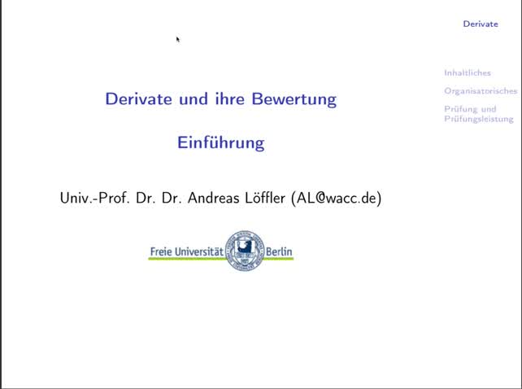
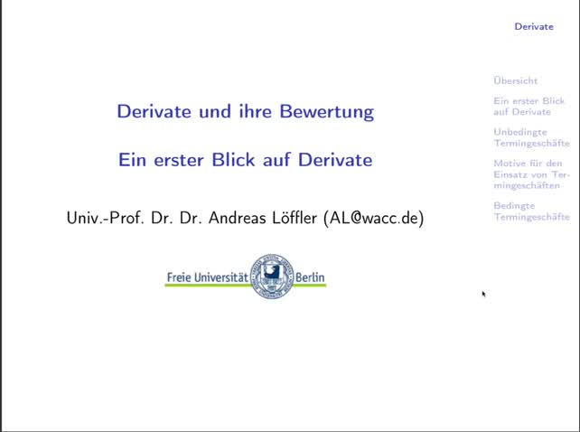
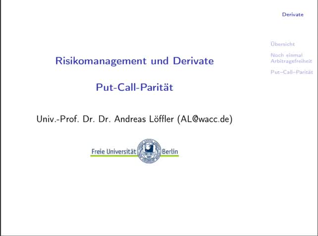
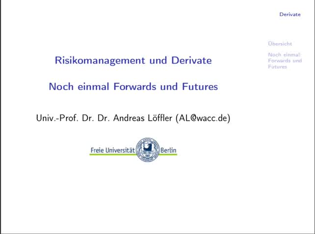
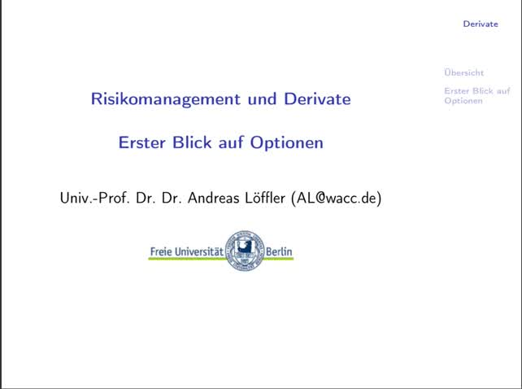
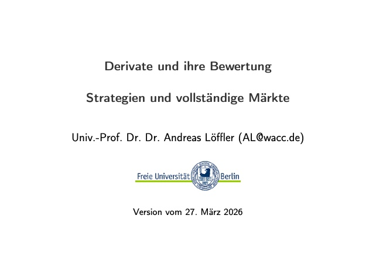
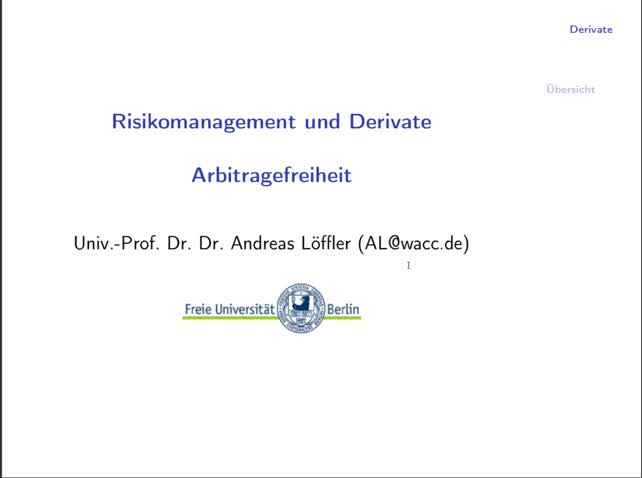
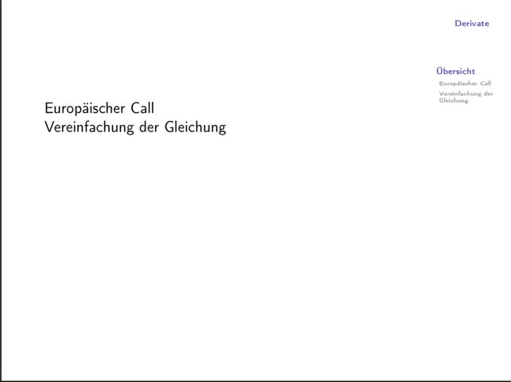
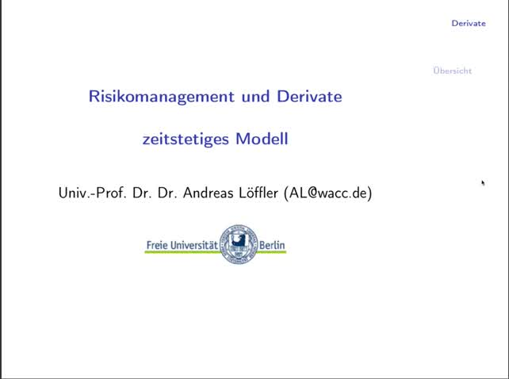

Start here
Einführung (19:41)
Empfohlener Einstieg in Aufbau, Organisation und zentrale Grundideen des Kurses.
Strukturierter Zugang zu den Panopto-Videos des Kurses Derivate und ihre Bewertung von Andreas Löffler. Die Seite bündelt alle Vorlesungen in einem gemeinsamen Verzeichnis mit Video-Link, Laufzeit und zugehörigen Folien.
Die Videos liegen auf Panopto. Je nach Konfiguration der FU-Instanz ist für den Zugriff ein Login in der Organisation erforderlich.

Start here
Empfohlener Einstieg in Aufbau, Organisation und zentrale Grundideen des Kurses.
Alle Sitzungen des Kurses in einer chronologischen Übersicht. Die Titel verlinken direkt zu den Panopto-Videos; darunter finden sich jeweils die zugehörigen Folien.

Vorlesung 01-02

Vorlesung 03

Vorlesung 04

Vorlesung 05
Vorlesung 06
Vorlesung 07
Vorlesung 08
Vorlesung 09

Vorlesung 10

Vorlesung 11

Vorlesung 12

Vorlesung 13
Kontaktdaten des Verantwortlichen für Datenschutz
Sollten Sie Fragen zum Datenschutz haben, finden Sie nachfolgend die Kontaktdaten der verantwortlichen Person bzw. Stelle:
Andreas Löffler (Freie Universität Berlin), Thielallee 73, 14195 Berlin, E-Mail-Adresse: loefflera@zedat.fu-berlin.de
Wir entwickeln die Inhalte dieser Website ständig weiter und bemühen uns korrekte und aktuelle Informationen bereitzustellen. Leider können wir keine Haftung für die Korrektheit aller Inhalte auf dieser Website übernehmen, speziell für jene, die seitens Dritter bereitgestellt wurden. Als Diensteanbieter sind wir nicht verpflichtet, die von Ihnen übermittelten oder gespeicherten Informationen zu überwachen oder nach Umständen zu forschen, die auf eine rechtswidrige Tätigkeit hinweisen.
Unsere Verpflichtungen zur Entfernung von Informationen oder zur Sperrung der Nutzung von Informationen nach den allgemeinen Gesetzen aufgrund von gerichtlichen oder behördlichen Anordnungen bleiben auch im Falle unserer Nichtverantwortlichkeit davon unberührt.
Sollten Ihnen problematische oder rechtswidrige Inhalte auffallen, bitte wir Sie uns umgehend zu kontaktieren, damit wir die rechtswidrigen Inhalte entfernen können. Sie finden die Kontaktdaten im Impressum.
Unsere Website enthält Links zu anderen Websites für deren Inhalt wir nicht verantwortlich sind. Haftung für verlinkte Websites besteht für uns nicht, da wir keine Kenntnis rechtswidriger Tätigkeiten hatten und haben, uns solche Rechtswidrigkeiten auch bisher nicht aufgefallen sind und wir Links sofort entfernen würden, wenn uns Rechtswidrigkeiten bekannt werden.
Alle Texte sind urheberrechtlich geschützt. Quelle: Erstellt mit dem Datenschutz Generator von AdSimple